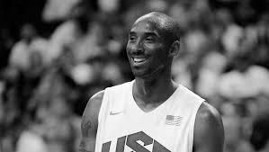

Kobe Bean Bryant
A basketball legend

Kobe Bryant celebrates after a Lakers Championship win.
Here's a time line of Kobe Bryant's life:
- 1978- Born in Philadelphia, Pennsylvania
- 1996- With the 13th pick in the 1996 NBA Draft, the Charlotte Hornets select Kobe Bryant from Lower Merion High School. They later trade him to the Los Lakers for Vlade Divac for a three-year, $3.5 million rookie contract.
- 1997- Participates in the Rookie Challenge and wins the Slam Dunk contest scoring a near-perfect score of 49 in the second round.
- 1999-2002- Wins the NBA crown alongside Phil Jackson and Shaquille O'Neal winning three straight titles in 2000, 2001 and 2002.
- 2006- Bryant scores a career-high 81 points against the Toronto Raptors. It's the second-highest points total in a single game in league history.
- 2008- Joins the United States Men's Basketball ahead of the 2008 Summer games in Beijing and helps the team win 118-107 against Spain.
- 2012- Wins his final gold medal at the 2012 Summer Olympics in London.
- 2016- Announces retirement at the end of season and played his final NBA game on April 13th leading the Lakers to a 101-96 win over the Utah Jazz.
- 2017- The Lakers retires Bryant's jersey numbers 8 and 24.
- 2018- Wins the Oscar for Best Animated Short Film at the 90th Academy Awards for the "Dear Basketball" short film.
- 2020- Dies at the age of 41.
"--45th President of the United States of America, President Barack Obama"